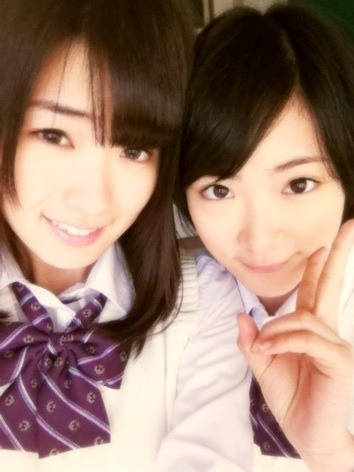

| 2012/01 13 Fri | ヽ(・∀・) ノ |

お久しぶりです！
生駒里奈です!!
いやぁ〜毎日充実してて、いい疲れがどっと押し寄せてくるね

イスにおしりつけると
とたんに眠くなる毎日です
でも楽しいです!!
日々成長しないと前にいけないね〜(ノд<。)゜。
みなさん!!
暖かいコメントありがとうございます。
自分ではあまり意識してなかったけど
いこまちゃん結構
自分はダメだって言っているようですね〜
他にも沢山自分について知ることができました。
なので
みなさんにお願いがあります!!
コメントに私の特徴とかいろいろ書いていただけないでしょーか!?
自分ひとりだけでは気づけないことも、周りから教えてもらうことでもっとよくなっていくと思います。
どうかよろしくお願いいたします
あと
話がすごい変わりますが〜
いこまちゃん最近ひざが痛くて…
ひざに爆弾を抱えたアイドルなんていうキャッチフレーズがちらついて・・・。
なんでいたいんだろう？
考えた結果!
成長痛ヽ(・∀・)ノ
いこまちゃんはまだ身長が伸びるのだ〜ヽ(・∀・)ノと答えを出しました(笑)
もしかしたら今度あったとき、いこまちゃん身長のびてるかもよっ
へばなっ!!
コメント(151)
2012/01/13 08:27